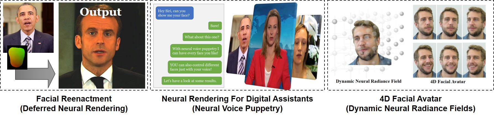
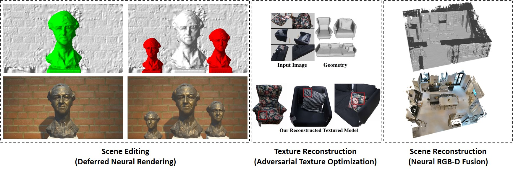
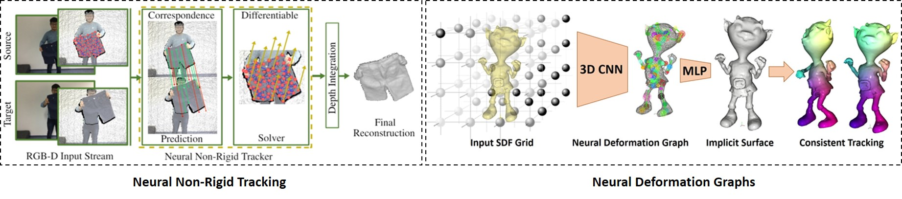

3D Graphics and Vision at the Technical University of Darmstadt
2023, Aug 14
Justus Thies

I am happy to announce that I am joining the Technical University Darmstadt as a full professor for 3D Graphics and Vision in September 2023.
My group will work at the intersection of computer graphics, computer vision and machine learning.
The main theme of my work is to capture and to (re-)synthesize the real world using commodity hardware.
It includes the modeling of the human body, tracking, as well as the reconstruction and interaction with the environment.
The digitization is needed for various applications in AR/VR as well as in movie (post-)production.
Teleconferencing and working in VR is of high interest for many companies ranging from social media platforms to car manufacturer.
It enables the remote interaction in VR, e.g., the inspection of 3D content like CAD models or scans from real objects.
A realistic reproduction of appearances and motions is key for such applications.
Capturing natural motions and expressions as well as the photorealistic reproduction of images under novel views are challenging.
With the rise of deep learning methods and, especially, neural rendering, we see immense progress to succeed in these challenges.
The goal of my work is to develop methods for AI-based image synthesis of humans, the underlying representation of appearance, geometry and motion to allow for explicit and implicit control over the synthesis process.
My work on 3D reconstruction, tracking and rendering does not focus exclusively on humans but also on the environment and objects we interact with, thus, enabling applications like 3d telepresence or collaborative working in VR.
In both areas, reconstruction and rendering, hybrid approaches that combine novel findings in machine learning with classical computer graphics and computer vision approaches show promising results.
Nevertheless, these methods still suffer from limitations like generalizability, controllability and editability which I will tackle in my ongoing and future work.



On my website and on my YouTube page you will find a couple of interesting projects I have been working on in the past:
- Facial Reenactment / Reconstruction
- Neural Rendering
- Neural Non-rigid Tracking
- 3D Reconstruction / Texturing
- Multi-media Forensics